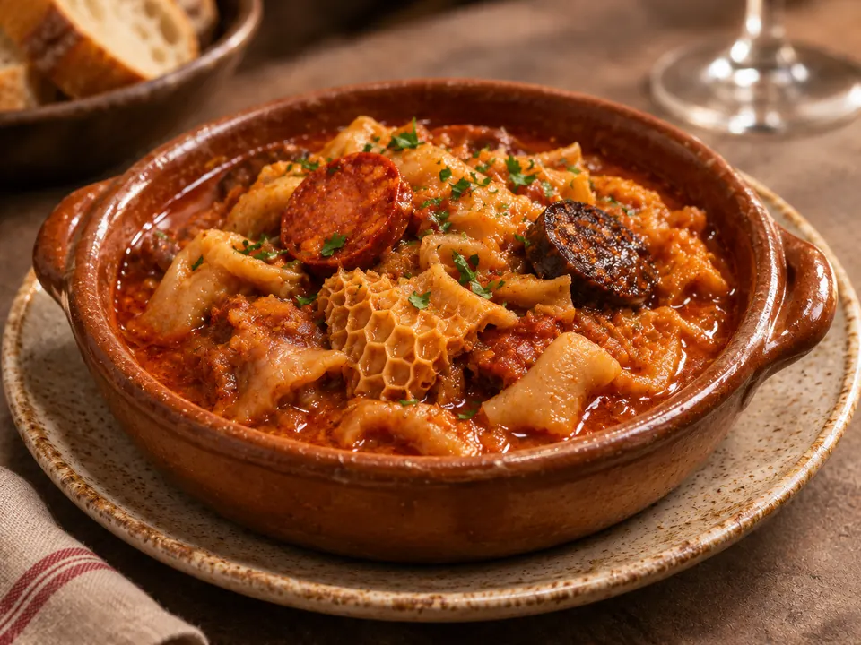

Croquetas caseras
De jamón ibérico y de gamba roja.
Disfruta de los sabores de El Consaburense también en casa. Consulta nuestros platos tradicionales, pregunta por disponibilidad y haz tu encargo llamando al restaurante.
Consultar carta y encargos ↗Entrantes, guisos, carnes y postres caseros. Para arroces, asados y pescados especiales, te recomendamos consultar el encargo con antelación. Aquí encontrarás la carta completa en texto, para que puedas verla sin instalar aplicaciones.
Las imágenes son recreaciones gastronómicas generadas con IA y no fotografías de platos elaborados por el restaurante.
De jamón ibérico y de gamba roja.

Una de las recetas de nuestra carta de guisos.

Consulta la preparación por encargo.
Llámanos para consultar precios, cantidades y cuándo tenerlo preparado.